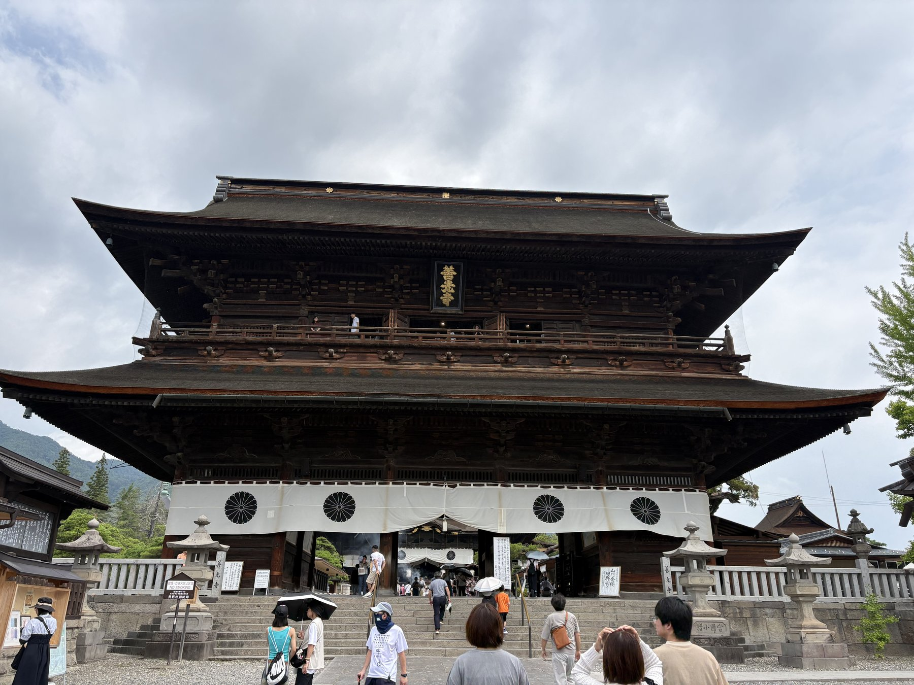
特定の宗派を持たない、日本でも数少ない無宗派の寺。
誰もが本尊の真下を漆黒の闇でたどる「お戒壇巡り」に挑める――
間口の広さこそが、1400年続いてきた理由という寺を歩く一冊。
掲載の料金・開門時間・公開状況は変動する可能性があります。おでかけ前に必ず 善光寺公式サイト(https://www.zenkoji.jp/)でご確認ください。
| 名称 | 善光寺(ぜんこうじ) |
|---|---|
| 所在地 | 長野県長野市元善町491 |
| 宗派 | 無宗派(単立)。天台宗大勧進と浄土宗大本願の「両山」が共同で護持・運営 |
| 創建 | 伝・皇極天皇3年(644年)勅願により伽藍造営(諸説あり) |
| 本尊 | 一光三尊阿弥陀如来(善光寺如来)。日本最古の仏像と伝わる絶対秘仏 |
| 国宝 | 本堂(1707年〈宝永4年〉再建。1953年〈昭和28年〉指定) |
| 重要文化財 | 山門(三門)・経蔵(いずれも1965年〈昭和40年〉指定) |
| 公式サイト | https://www.zenkoji.jp/ |
「読んでから行く」「行ってから読み返す」――どちらにも応える構成にしました。 由来や意匠の背景を知ってから境内に立つと、同じ山門、同じ本堂が、まったく違って見えてきます。
『善光寺縁起』によれば、御本尊の一光三尊阿弥陀如来は欽明天皇13年(552年)、 仏教公伝の折に百済から日本へ伝えられた日本最古の仏像と伝わります。 しかし仏教という新しい信仰を受け入れるかどうかを巡って朝廷は割れ、崇仏派の蘇我氏と 排仏派の物部氏が対立。疫病の流行を機に、仏像は排仏派によって難波(現在の大阪)の 堀江に打ち捨てられてしまいます。
信濃国司の従者として都に上っていた本田善光が、この打ち捨てられた 仏像を見つけ、信濃国へと連れ帰りました。はじめは現在の長野県飯田市付近で祀られていましたが、 皇極天皇元年(642年)に現在の地へ遷座。皇極天皇3年(644年)、勅願により伽藍が造営され、 本田善光の名にちなんで「善光寺」と名付けられたと伝わります。
天竺(インド)の長者・月蓋長者が、阿弥陀如来に一人娘の病を治してもらった礼として、 一つの光背に阿弥陀如来・観音菩薩・勢至菩薩の三尊をおさめた姿で祀ったのが由来と伝わります。 この「一光三尊」形式の阿弥陀像は善光寺信仰とともに全国へ広まり、各地に「信濃善光寺」を 模した分身仏を祀る寺が数百か寺あるとされます。
創建以来、善光寺は十数度の大火に見舞われてきたとされます。それでも 全国の信徒の喜捨によってそのたびに再建され、現在の本堂は宝永4年(1707年)の 再建。江戸中期を代表する仏教建築として、昭和28年(1953年)に国宝に指定されました。
「遠くとも一度は詣れ善光寺」――この言葉が広く知られるようになったのは江戸時代後期。 善光寺は特定の宗派に属さず、男女や身分の別なく誰でも参拝でき、極楽往生を願える寺として 全国からの信仰を集めました。中山道・北国街道が交わる交通の要衝であったことも、 「一生に一度は」という言葉が全国区の合言葉になった一因とされます。
信心のなかった老婆が、川で干していた布を角に引っかけて走り去った牛を追いかけるうち、 いつのまにか善光寺にたどり着き、一夜の参籠で信心を得たという民話(舞台は現在の 小諸市・布引観音と伝わる)。「思いがけない偶然が、良い結果に導く」という意味の ことわざとして今も使われます。
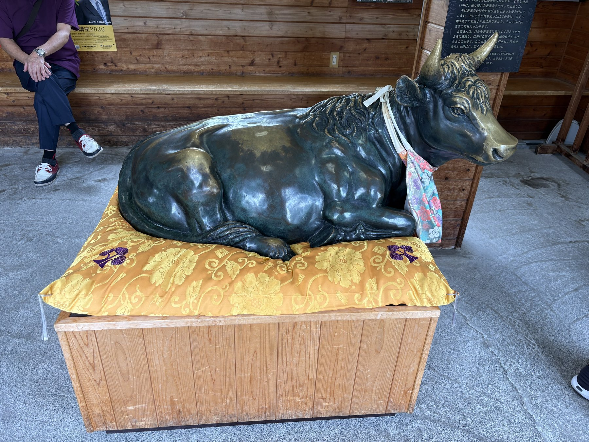
もっとも大きな悲劇は、幕末の弘化4年(1847年)3月24日 (西暦5月8日)に起きました。マグニチュード7.4と推定される直下型の地震 (善光寺地震)が信濃国北部を襲いました。折悪しく本尊の居開帳が行われていた最中で、 全国から集まっていた宿泊客約7,000〜8,000人の9割が命を落としたとされ、 地震による死者は総数1万2,000人を超えたと伝わります。地すべりで犀川がせき止められ、 19日後の決壊で下流に洪水被害が及ぶという二次災害も重なりました。門前町の賑わいそのものが、 この時ばかりは犠牲の大きさに直結してしまったのです。
善光寺地震は「観光地が繁忙期に被災する」という悲劇の先例として、今日でも防災研究で 言及されることがあります。現在の本堂・山門・経蔵はいずれもこの地震以前から建つ建物であり、 幾多の災害を経て今に伝わっていることになります。
現在の本堂は宝永4年(1707年)の再建で、東日本最大級の木造建築 にして江戸中期仏教建築の傑作とされます。最大の特徴は撞木造(しゅもくづくり) と呼ばれる構造で、仏堂の前面に長大な礼堂(らいどう)を接続し、上から見ると鐘を打つ撞木 (T字形の棒)のような形になります。外陣(誰でも入れる領域)と内陣(本尊が安置される領域)の 奥行きが深く連続しているのもこの構造ゆえで、1953年(昭和28年)に国宝指定 されました。
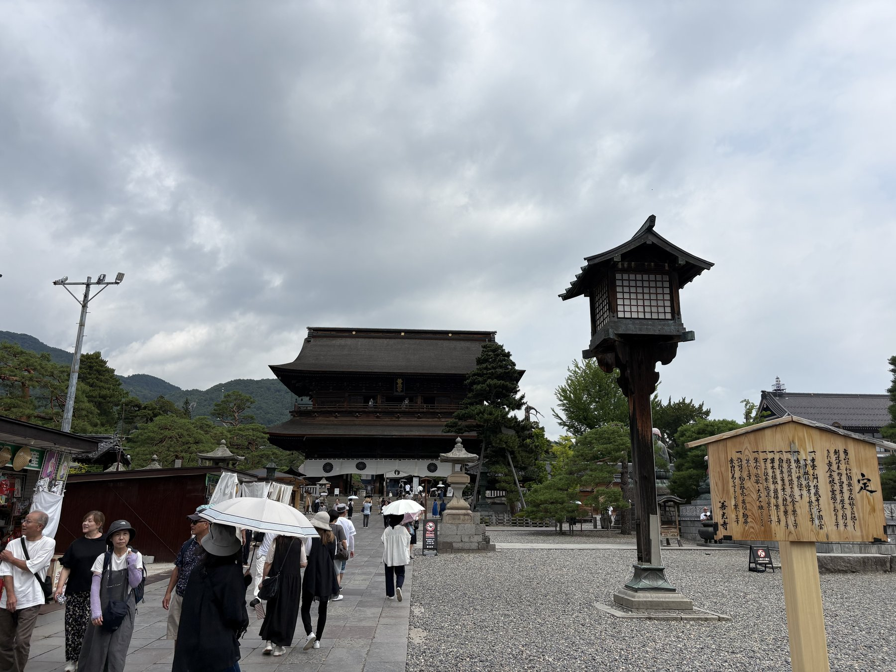
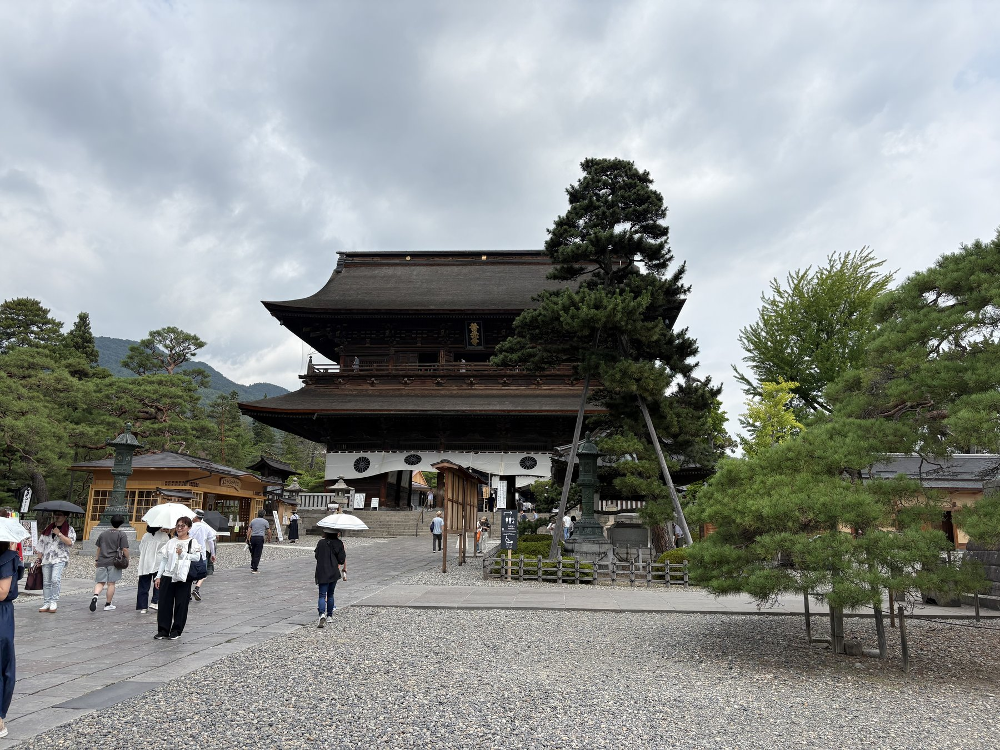
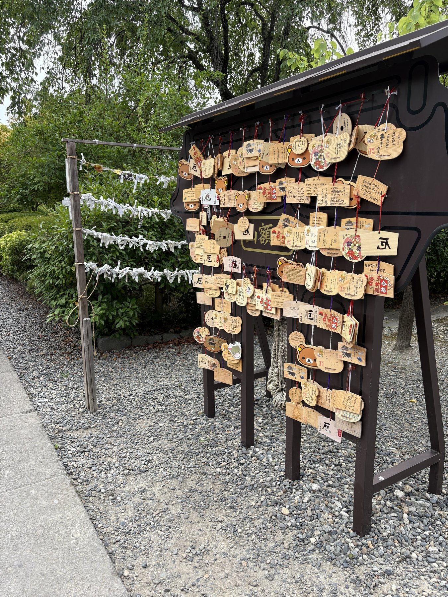
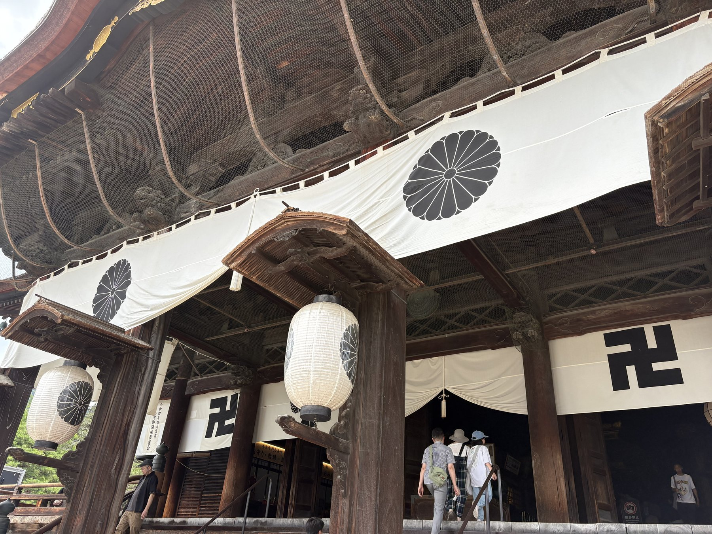
本堂の手前に建つ山門(三門)は江戸時代中期の寛延3年 (1750年)建立、国の重要文化財。2階部分に上って参道を見下ろすことができます (別途拝観券が必要)。門に掲げられた「善光寺」の額は輪王寺宮公澄法親王の筆によるもので、 3文字の中に5羽の鳩が隠されていることから通称「鳩字の額」 と呼ばれます。「善」の一字は牛の顔にも見えるとされ、参拝者が実際に探しながら 見上げる、山門ならではの楽しみ方になっています。
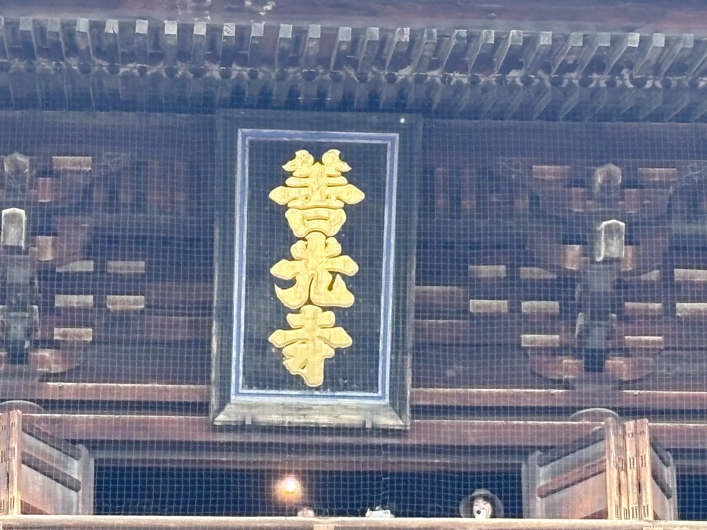
山門の東側に建つ経蔵は、山門から4年遅れて宝暦4年 (1754年)に着工、同9年(1759年)に供養が行われた重要文化財(1965年〈昭和40年〉指定)。 方五間・宝形造・檜皮葺で、一辺約15.5m・高さ約17m。その堂内中央に、直径約3mの八角形の 回転式書庫「輪蔵」が据えられ、一切経(仏教経典の集大成)6,771巻が 納められています。この輪蔵を時計回りに一周押し回すと、一切経をすべて読んだのと 同じ功徳が得られると伝わります。
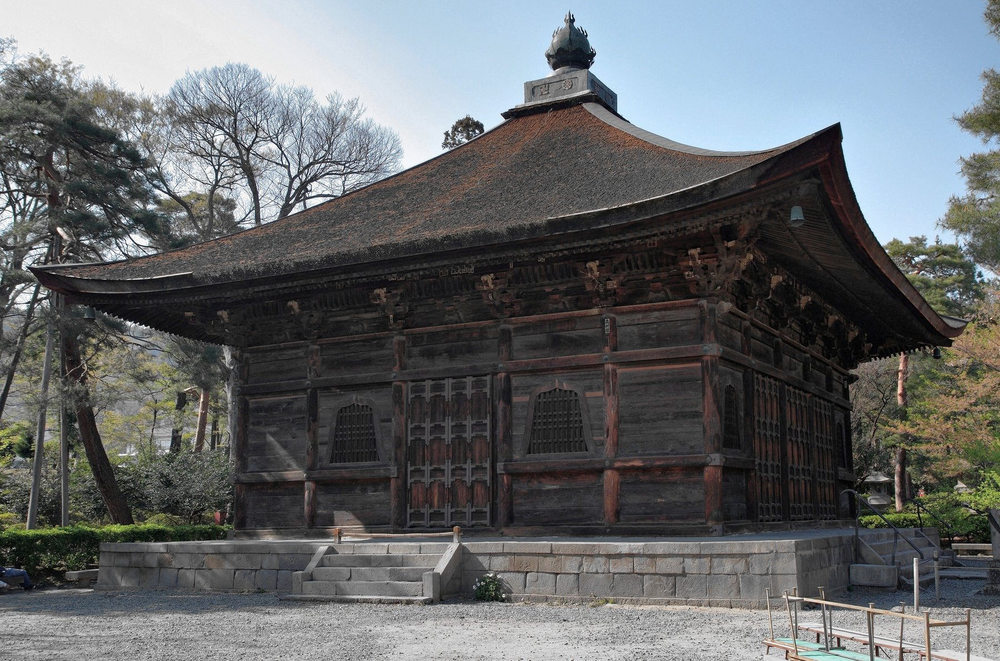
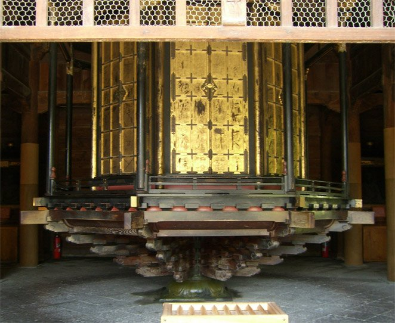
仲見世通りの入口に建つ仁王門は大正7年(1918年)の再建 (現在の門としては3代目)。門の正面には善光寺の山号「定額山(じょうがくさん)」 の額が掲げられ、左右には阿形・吽形の仁王像、裏に三宝荒神・三面大黒天を安置します。 これらの像は彫刻家高村光雲(高村光太郎の父)と米原雲海 による近代彫刻で、支えを使わず体の中心だけでバランスを取って自立していることでも 知られます。山門(三門)より小ぶりで平屋建てのため、2階にバルコニーを持つ山門と 見た目で区別できます。
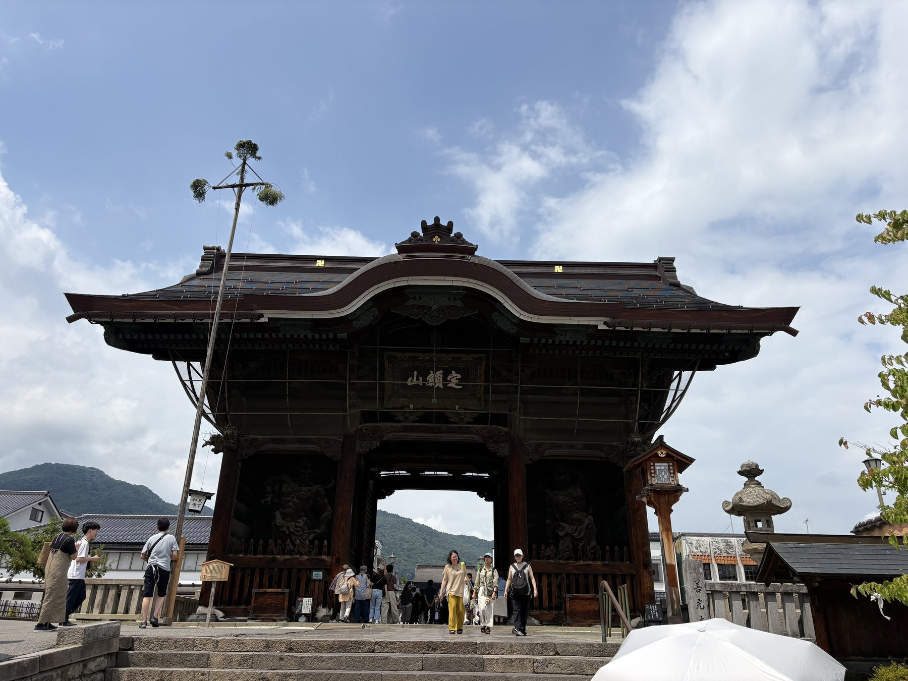
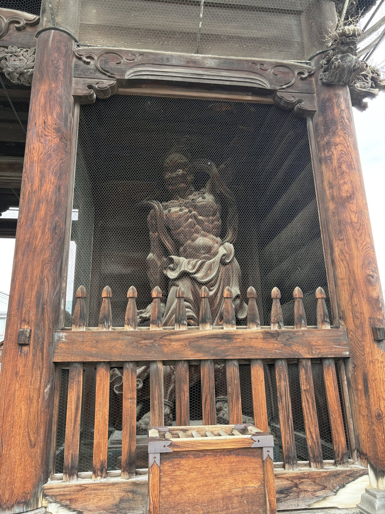
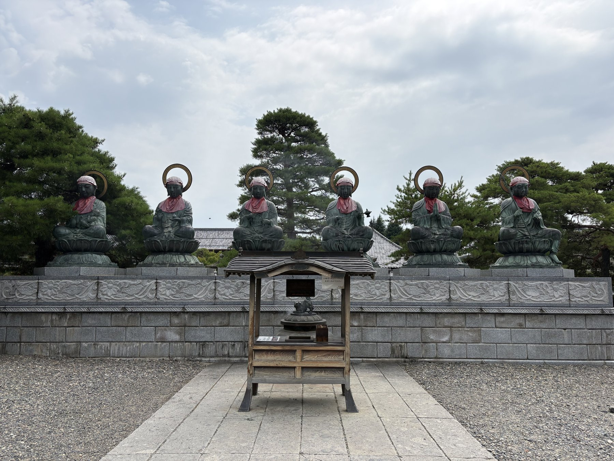
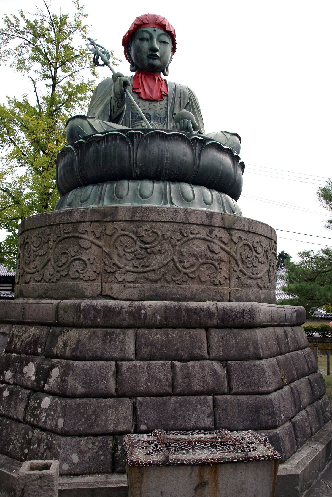
境内の絵馬掛けには、定番の五角形の絵馬に混じって人気キャラクター「リラックマ」との コラボ絵馬もかけられています。合格祈願・厄除けなど願いごとの内容は伝統的な絵馬と 変わりませんが、老若男女を選ばない間口の広さは「一生に一度は」を掲げてきたこの寺 らしい柔軟さともいえます。
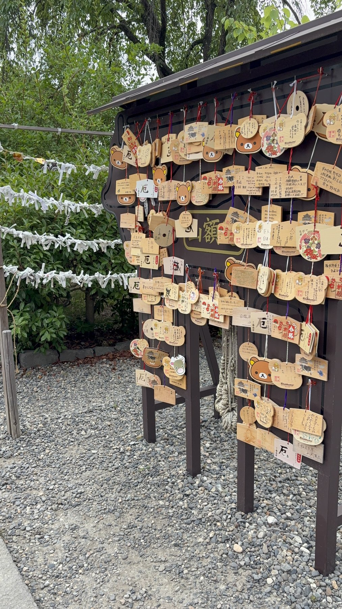
お戒壇巡りは、本堂内陣の下にある真っ暗な回廊を、右手で壁伝いに 手探りしながら一周する参拝作法。ちょうど本尊の真下にあたる場所で「極楽の錠前」という 金具に触れることができれば、本尊と結縁したことになるとされます。光が一切入らない 完全な暗闇の中を歩く体験そのものが、このお寺の参拝の核心とも言えます。
善光寺は特定の宗派に属さない単立寺院であり、天台宗の 大勧進と、浄土宗の大本願という2つの本坊による 共同運営体制(両山)を敷いています。大勧進の住職は「貫主(かんす)」と呼ばれ天台宗の 名刹から推挙され、大本願は大寺院としては珍しい尼寺です。山内には 大勧進のもとに天台宗25院、大本願のもとに浄土宗14坊が連なり、これらが一体となって 善光寺を護持しています。日々のお朝事(早朝の勤行)でも両宗派それぞれの法要が 1回ずつ、間を空けずに営まれます。
誰の寺でもあり、誰の寺でもない――そのバランスの上に、1400年近い 歴史が積み重ねられてきました。次の第3章では、実際にこの境内をどう歩けばよいかを ご案内します。
| プラン | 時間 | 内容 |
|---|---|---|
| 駆け足 | 約1時間 | 本堂の参拝・お戒壇巡りのみ |
| 標準 | 約1.5〜2時間 | 仲見世通り＋本堂＋山門の登楼 |
| じっくり | 約2〜3時間 | 経蔵・史料館・大本願や大勧進まで、 参拝券セットで一通り巡る |
お戒壇巡りは行列ができやすく、混雑時は待ち時間が発生します。朝一番(お朝事直後)は 比較的空いている時間帯とされます。堂内は完全な暗闇になるため、両手が空く荷物と 歩きやすい靴をおすすめします。
仁王門から山門まで約200mにわたる石畳の参道が仲見世通り です。参道の敷石は正徳4年(1714年)に江戸の商人から寄進されたものと伝わり、境内入口から 本堂までの総数はおよそ7,777枚といわれます。通りの両側には和菓子店・仏具店・そば店・ 土産物店など50〜60軒が軒を連ねます。おやきや七味を使ったソフトクリームなど、 参拝の合間に立ち寄れる食べ歩きの店も多くあります。
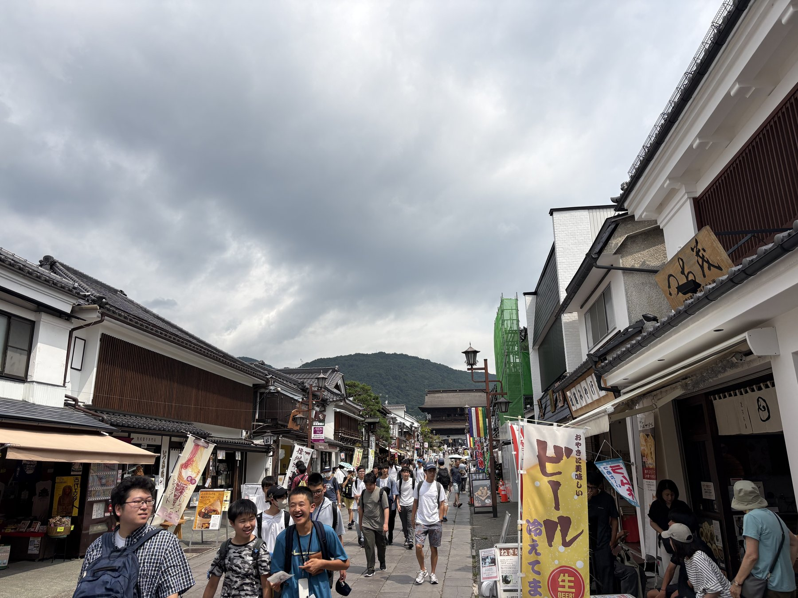
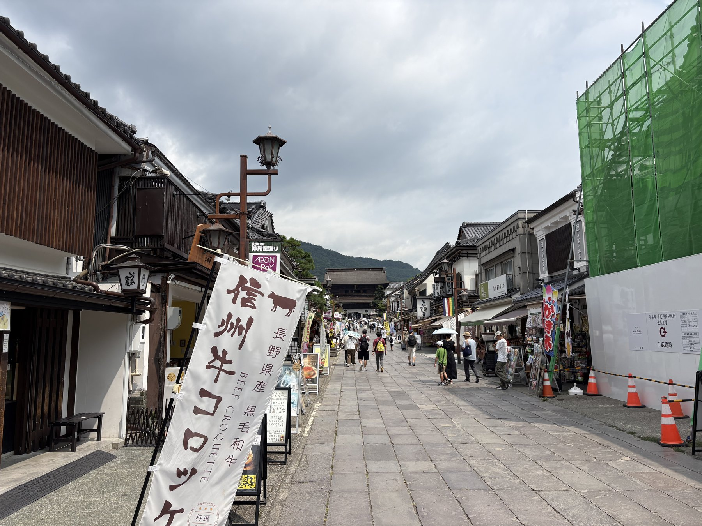
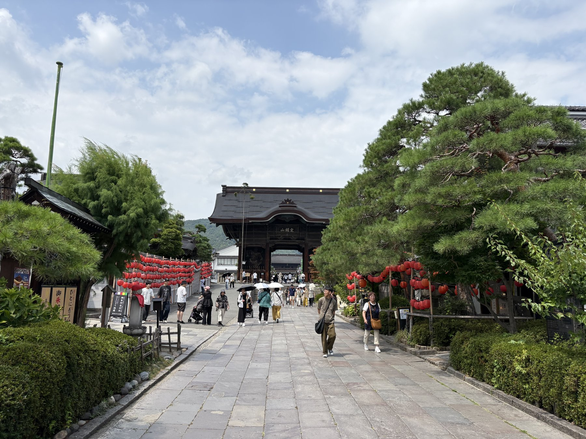
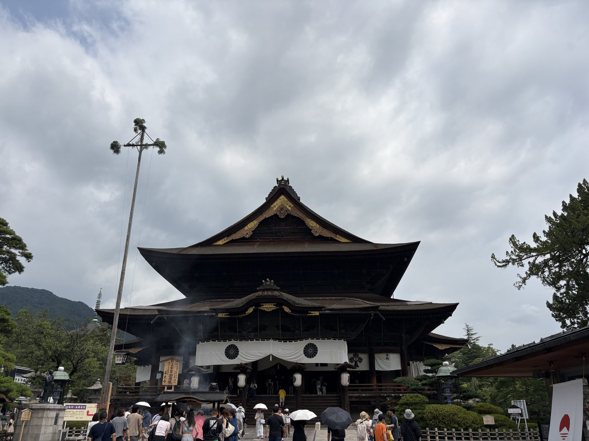
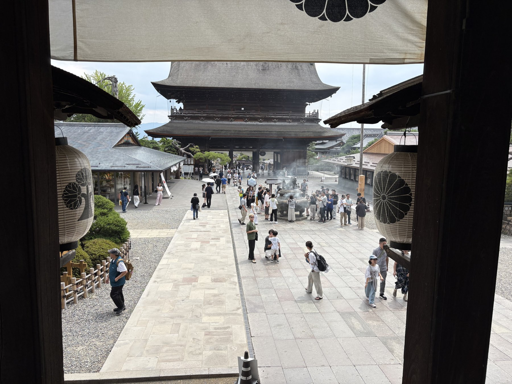
仁王門から本堂まで、歩いてわずか十数分。それでも見どころを一つずつ 確かめながら進むと、あっという間に1時間近くが経ちます。第4章では、実際に訪れる前に 確認しておきたい拝観情報とアクセスをまとめます。
| 境内 | 24時間無料開放(本堂外陣までは無料で参拝可能) |
|---|---|
| 参拝券 | 本堂内陣・お戒壇巡り・山門・経蔵・史料館の拝観には参拝券が必要。 発券機は本堂正面右手 |
| 共通券 | 一般1,500円 ／ 中高生600円 ／ 小学生200円 ／ 未就学児無料 (本堂内陣＋お戒壇巡り＋山門＋経蔵＋史料館のセット) |
| 個別券 | 本堂内陣・お戒壇巡り 一般800円(中高生300円・小学生100円)／ 山門 一般800円(同)／ 経蔵 一般500円(中高生300円・小学生100円) |
| 本堂内陣 | 開館はお朝事の1時間前から。閉館は4〜10月16:30 ／ 3・11月16:15 ／ 12〜2月16:00(12月31日は13:00まで、12月28日は8:30まで) |
| 山門・経蔵 | 開館9:00〜閉館16:00(12月31日は13:00まで) |
| お朝事(あさじ) | 本堂で毎日営まれる早朝の法要。開始時刻は日の出に連動し、 夏は5:30頃〜、冬は7:00頃〜。天台宗・浄土宗それぞれの法要が1回ずつ営まれる |
⚠ 2026年(令和8年)4月1日に参拝料金と券種が改定されました(上記は改定後の 金額)。古いガイド・観光サイトには改定前の金額が残っていることがあります。 料金・時間は変動します。おでかけ前に必ず 公式サイトでご確認ください。
2027年4月4日から6月19日まで(77日間)予定。前立本尊が公開され、本堂前に触れると 御利益があるとされる回向柱が建てられます。御開帳期間中は大幅な混雑が見込まれるため、 訪問時期によっては通常期を選ぶのも一つの判断です。
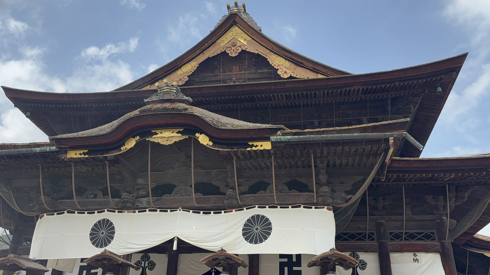
| 最寄り駅 | JR「長野駅」 |
|---|---|
| バス | 長野駅善光寺口1番のりばからアルピコ交通バスで「善光寺大門」まで 約8〜10分・190円、下車後徒歩約10分。長野駅4番のりばから中心市街地循環バス 「ぐるりん号」の利用も可能 |
| 徒歩 | 長野駅から本堂まで約30分 |
| 車 | 境内周辺に公式の参拝者用駐車場(第1〜第5・有料)あり。通常の平日は 停めやすいが、初詣・連休・御開帳期間中は満車になりやすい |
| 春 | 御開帳の年に重なれば最大の盛り上がり。参道の桜 |
|---|---|
| 夏 | 早朝のお朝事が涼しく、参道の賑わいも朝から楽しめる |
| 秋 | 山門・経蔵の木肌に映える紅葉、参道の落ち着いた雰囲気 |
| 冬 | 雪化粧した本堂の甍。除夜の鐘・初詣は全国有数の人出 |
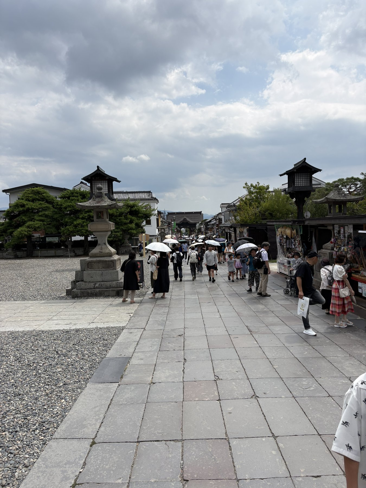
大本願・大勧進の庭園、史料館の宝物、お朝事の見学――本書で触れきれなかった 場所は、まだまだ残っています。二度目の参拝では、朝いちばんのお朝事から 一日を始めてみてください。
本書に掲載した写真のうち20点(仲見世通り・山門・本堂・仁王門・ 六地蔵・絵馬・伝説の牛の像などの各カット)は、著者本人による撮影です (著作権は著者本人に帰属し、クレジット表記の法的義務はありません)。 残る3点はWikimedia Commons由来で、下記のとおりクレジット表記を行っています。
CC BY 2.1: https://creativecommons.org/licenses/by/2.1/jp/
CC BY 2.5: https://creativecommons.org/licenses/by/2.5/
掲載の料金・開門時間・公開状況は変動する可能性があります。 おでかけ前に必ず善光寺公式サイト(https://www.zenkoji.jp/)でご確認ください。 本書の情報は制作時点のものであり、その正確性・完全性を保証するものではありません。
日本の名刹ガイド 第一巻
一寺一冊で、日本各地の名刹を訪ねるデジタルガイドシリーズ。第一作に選んだのは、
特定の宗派を持たないという間口の広さで、1400年近く「一生に一度は」と
言われ続けてきた信濃の名刹・善光寺です。